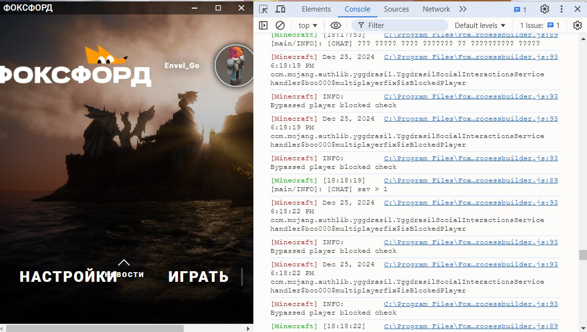
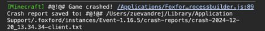
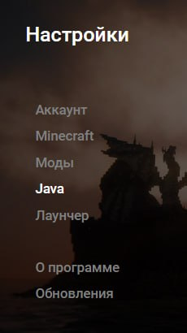
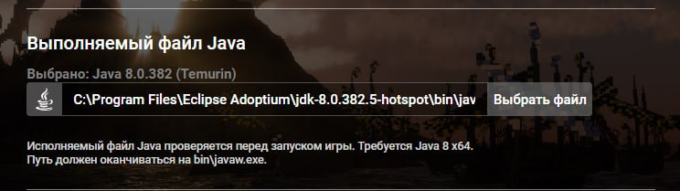
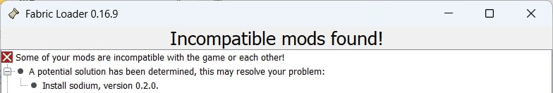
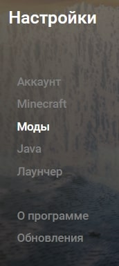

💻 Какая информация необходима для передачи разработчику и исправлению багов
Шаг 1: Открываем отладку комбинацией Ctrl + Shift + I и переходим на вкладку Console

- Лаунчер работает на технологии, аналогичной Chrome. Нужен весь лог из консоли в текстовом виде.
Шаг 2: Обратите внимание на сообщение о краше игры, если оно есть.

- Скопируйте .txt файл по этому пути себе на компьютер для передачи вместе с логом.
СОЗДАТЬ ТИКЕТ GITHUB
ИСПРАВЛЕНИЕ ПРОБЛЕМЫ НА MACOS на M ПРОЦЕССОРАХ APPLE (~2% пользователей)
Проблема
- Версия игры 1.16.5 не поддерживает ARM процессоры.
Вариант решения
- Этот вариант решения не тестировался.
- Сейчас используется Java ARM. Старые версии игры не поддерживают M процессоры. Нужно использовать Java x64 для того, чтобы сработала эмуляция rozetta. Следующий шаг предлагает конкретные действия для этого.
- Скачайте JAVA x64 MacOS: https://adoptium.net/temurin/releases/?os=mac&arch=x64&package=jre&version=8
СКАЧАТЬ JAVA x64 MacOS
- Заходим в настройки лаунчера
- Java

- Выбираем исполняемый файл скачанной и установленной JAVA x64 MacOS. Он будет лежать по расположению java в bin\java

- Запускаем игру
- Информируйте о ЛЮБОМ результате. Нам важно знать, что это помогло/не помогло!
СОЗДАТЬ ТИКЕТ GITHUB
ИСПРАВЛЕНИЕ ПРОБЛЕМЫ С ЗАГРУЗЧИКОМ FABRIC (ВСЕ СИСТЕМЫ) (<1% пользователей)
Проблема
- При входе вылетает окно Fabric Loader с любой ошибкой.

Вариант решения
- Установленные модификации для оптимизации не работают на текущем оборудовании. Проблема решается индивидуально и крайне редкая. Можно отключить все, это значительно снизит производительность, но решит проблему. Следующий шаг предлагает конкретные действия для этого.
- Заходим в настройки лаунчера
- Моды

- Отключаем все необязательные моды

- Запускаем игру
- Информируйте разработчика, если не помогло.
СОЗДАТЬ ТИКЕТ GITHUB